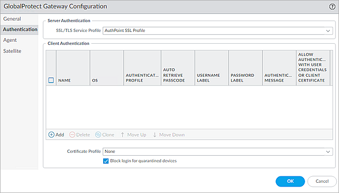

Deployment Overview
This document describes how to set up AuthPoint multi-factor authentication (MFA) for Palo Alto Networks GlobalProtect. GlobalProtect must already be configured and deployed before you set up MFA with AuthPoint.
Integration Summary
The hardware and software used in this guide include:
- Palo Alto PA-220 v10.2.3 or higher
- GlobalProtect Client v6.1.0 or higher
- AuthPoint Gateway v7.0.1 or higher
Palo Alto Configuration for RADIUS Authentication
AuthPoint communicates with various cloud-based services and service providers with the RADIUS protocol. This diagram shows an overview of the configuration required for RADIUS authentication.
Before You Begin
Before you begin these procedures, make sure that:
- You have finished the initial configuration of your Palo Alto PA-220
- You have installed the Palo Alto GlobalProtect in your client PC
- A token is assigned to a user in AuthPoint
We recommend that you install the AuthPoint Gateway. For more information, see About Gateways.
Configure Palo Alto
Complete the steps in this section to configure Palo Alto
Create a Certificate
- Log in to the Palo Alto PA-220 WebUI. The default IP address is https://192.168.1.1.
- Select the Device tab.
- From the navigation menu, select Certificate Management > Certificates.
- Click Generate.
The Generate Certificate window appears. - In the Certificate Name text box, type a name. In our example, we name this certificate Root-cert.
- In the Common Name text box, type a name.
- Select the Certificate Authority check box.
- In the Certificate Attributes section, click Add , then add Country and Organization certificate attribute and their values.
- Click Generate.
- Click OK.
- Click Generate to create another certificate.
The Generate Certificate window appears. - In the Certificate Name text box, type a name. In our example, we name this certificate Server-cert.
- In the Common Name text box, type external interface IP address of the Palo Alto PA-220.
- From the Signed By drop-down list, select the certificate you created. In our example, we select the Root-cert certificate.
- In the Certificate Attributes section, click Add , then add Country and Organization certificate attribute and their values.
- Click Generate.
- Click OK.
- Commit the settings.
- Export the two certificates that are created.
Create an SSL Service Profile
- Select the Device tab.
- From the navigation menu, select Certificate Management > SSL/TSL Service Profile.
- Click Add.
The SSL/TLS Service Profile window appears. - In the Name text box, type a name. In our example, we name the profile AuthPoint SSL Profile.
- From the Certificate drop-down list, select the second certificate that you created. In our example, this is the Server-cert certificate.
- From the Min Version drop-down list, select TLSV1.0.
- From the Max Version drop-down list, select Max.
- Click OK.
- Commit the settings.
Configure RADIUS Service
- Select the Device tab.
- From the navigation menu, select Service Profiles > RADIUS.
- Click Add to add a profile.
The RADIUS Server Profile window appears. - In the Profile Name text box, type a name. In our example, we name this profile AuthPointGateway.
- In the Timeout text box, type 60.
- In the Retries text box, type 3.
- From the Authentication Protocol drop-down list, select PAP.
- To add a RADIUS server, in the Servers section, click Add.
- Type a name for the RADIUS server. In our example, we name the RADIUS server AuthPointGW.
- In the RADIUS Server text box, type IP address of the server where the AuthPoint Gateway is installed.
- In the Secret text box, type a shared secret key. This key is used to communicate with the RADIUS server (AuthPoint Gateway). You must use this same secret key when you configure a RADIUS client resource in AuthPoint.
- In the Port text box, type 1812.
- Click OK.
- Select the Device tab.
- From the navigation menu, select Setup.
- Select the Services tab.
- Click Service Route Configuration.
- Select the Customize radio button.
- Select the IPv4 tab.
- From the list, select the RADIUS check box.
-
Click RADIUS.
The Service Route Source window appears. - From the Source Interface drop-down list, select the interface which connected to AuthPoint Gateway.
- From the Source Address drop-down list, select the IP address of this interface.
- Click OK.
- Click OK.
- Commit the settings.
Configure a Tunnel.
- Select the Network tab.
- From the navigation menu, select Interfaces > Tunnel.
- Click Add.
The Tunnel Interface window appears. - Next to the Interface Name, type 10.
- From the Virtual Router drop-down list, select default.
- From the Security Zone drop-down list, select trust.
- Click OK. Leave the default value for other settings.
- Commit the settings.
Configure an Authentication Profile
- Select the Device tab.
- From the navigation menu, select Authentication Profile.
- Click Add to add a profile.
The Authentication Profile window appears. - Type a name for the authentication profile. In our example, we name the profile RADIUSAuthPro.
- From the Type drop-down list select RADIUS.
- From the Server Profile drop-down list, select the RADIUS service profile created before. In our example, we select the AuthPoint Gateway profile.
- In the User Domain text box, type a user domain.
- Select the Advanced tab.
- Add all to the Allow List.
- In the Failed Attempts text box, type 0.
- In the Lockout Time(min) text box, type 0.
- Click OK.
- Commit the settings.
Configure a GlobalProtect Portal
- Select the Network tab.
- From the navigation menu, select GlobalProtect > Portals.
- To add a portal, click Add.
The GlobalProtect Portal Configuration window appears. - In the Name text box, type a name.
- From the Interface drop-down list, select the interface that is connected to the Internet.
- From the IP Address Type drop-down list, select IPv4 Only.
- From the IPv4 Address drop-down list, select the IP address of the interface that is connected to the Internet.
- Select Authentication.
- From the SSL/TSL Service Profile drop-down list, select the SSL Service Profile that you created. In our example, we select the AuthPoint SSL Profile.
- In the Client Authentication section, click Add.
The Client Authentication window appears. - In the Name text box, type a name.
- From the OS drop-down list, select Any.
- From the Authentication Profile drop-down list, select the authentication profile you created previously. In our example, we select the RADIUSAuthPro profile.
- Click OK in the Client Authentication window. Leave the default value for other settings.
- Select Agent.
- In the Agent section, click Add.
The Configs window appears. - In the Name text box, type a name.
- In the Components that Require Dynamic Passwords (Two-Factor Authentication) section, select all of the check boxes.
- Select the External tab.
-
In the External Gateways section, click Add.
The External Gateway window appears. - In the Name text box, type a name.
- For Address, select IP.
- In the IPv4 text box, type the IP address of the interface that is connected to the Internet.
- Click Add. Set Source Region to Any and set Priority to Highest.
- Click OK.
The External Gateway window closes. - Click OK.
The Configs window closes. - Click OK.
The GlobalProtect Portal Configuration window closes. - Commit the settings.
Configure GlobalProtect Gateway
- Select the Network tab.
- From the navigation menu, select GlobalProtect > Gateways.
- Click Add.
The GlobalProtect Gateway Configuration window appears. - Type a name for the gateway. In our example, we name the Gateway GlobalProtect.
- From the Interface drop-down list, select the interface that is connected to the Internet.
- From the IP Address Type drop-down list, select IPv4 Only.
- From the IPv4 Address drop-down list, select the IP address of the interface that is connected to the Internet.
- Select Authentication.
- From the SSL/TSL Service Profile drop-down list, select the SSL Service Profile that you created. In our example, we select the AuthPoint SSL Profile.

- In the Client Authentication section, click Add.
The Client Authentication window appears. - In the Name text box, type a name.
- From the OS drop-down list, select Any.
- From the Authentication Profile drop-down list, select the authentication profile you created previously. In our example, we select the RADIUSAuthPro profile.
- Leave the default value for other settings, click OK.
- Select Agent.
- Select the Tunnel Mode check box.
- From the Tunnel Interface drop-down list, select the tunnel you created in the previous section.
- Select the Enable IPSec check box.
- Select the Client Settings tab.
- Click Add.
- In the Name text box, type a name.
- Select the IP Pools tab.
- In the IP Pool section, click Add and add an IP pool.
- Click OK.
The Configs window closes. - Click OK.
- Commit the settings.
Configure AuthPoint
Before AuthPoint can receive authentication requests from GlobalProtect, you must:
- Specify GlobalProtect as a RADIUS client resource in AuthPoint.
- Add an authentication policy for the GlobalProtect RADIUS client resource or add the GlobalProtect RADIUS client resource to an existing authentication policy.
- Bind the GlobalProtect RADIUS client resource to the AuthPoint Gateway.
Add a RADIUS Resource in AuthPoint
From the AuthPoint management UI:
- From the navigation menu, select Resources.
Click Add Resource.
The Add Resource page opens.

- From the Type drop-down list, select RADIUS Client.
Additional fields appear.

- On the RADIUS Client page, in the Name text box, type a name for this resource.
- In the RADIUS client trusted IP or FQDN text box, type the Palo Alto internal interface IP address.
- In the Value sent for RADIUS attribute 11 (Filter-Id) drop-down list, select User's AuthPoint group.
- In the Shared Secret text box, type the shared secret that you configured in the Configure RADIUS Service section.

- Click Save.
Add a Group in AuthPoint
You must have at least one user group in AuthPoint to configure MFA. If you already have a group, you do not have to add another group.
To add a WatchGuard Cloud-hosted group to the WatchGuard Cloud Directory:
- Go to Configure > Directories and Domain Services.
- Click the WatchGuard Cloud Directory domain name. If you have not yet added the WatchGuard Cloud Directory, click Add Authentication Domain and select the WatchGuard Cloud Directory.
The New Group page appears.

- In the Groups tab, click Add Group.
- In the Group Name text box, type a descriptive name for the group.
- (Optional) In the Description text box, type a description of the group.

- Click Save.
Your group is added to the WatchGuard Cloud Directory and to AuthPoint.
Add an Authentication Policy to AuthPoint
Authentication policies specify which resources users can authenticate to and which authentication methods they can use.
You must have at least one authentication policy in AuthPoint that includes the GlobalProtect RADIUS client resource. If you already have authentication policies, you do not have to create a new authentication policy. You can add this resource to your existing authentication policies.
Users that do not have an authentication policy for a specific resource cannot authenticate to log in to that resource.
To configure an authentication policy:
- From the navigation menu, select Authentication Policies.
The Authentication Policies page opens.

- Click Add Policy.
The Add Policy page opens.

- In the Name text box, type a name for this policy.
- From the Select the Authentication Options drop-down list, select Authentication Options, then select which authentication options users can choose from when they authenticate.
If you enable the push and OTP authentication methods for a policy, RADIUS client resources associated with that policy use push notifications to authenticate users.
QR code authentication is not supported for RADIUS client resources.
- From the Groups drop-down list, select which groups this policy applies to. You can select more than one group. To configure this policy to apply to all groups, select All Groups.
- From the Resources drop-down list, select the resource that you created in the previous section. If you want this policy to apply to additional resources, select each resource this policy applies to. To configure this policy to apply to all resources, select All Resources.

-
(Optional) If you have configured policy objects such as a Network Location, select which policy objects apply to this policy. When you add a policy object to a policy, the policy only applies to user authentications that match the conditions of the policy objects. For example, if you add a Network Location to a policy, the policy only applies to user authentications that come from that Network Location. Users who only have a policy that includes a Network Location do not get access to the resource when they authenticate outside of that Network Location (because they do not have a policy that applies, not because authentication is denied).
For RADIUS authentication, policies that have a Network Location do not apply because AuthPoint does not have the IP address of the user.
If you configure policy objects, we recommend that you create a second policy for the same groups and resources without the policy objects. The policy with the policy objects should have a higher priority.

- Click Save.
Your policy is created and added to the end of the policy list.When you create a new policy, we recommend that you review the order of your policies. AuthPoint always adds new policies to the end of the policy list.
Bind the RADIUS Resource to a Gateway
To use RADIUS authentication with AuthPoint, you must have the AuthPoint Gateway installed on your corporate network and you must assign your RADIUS resources to the Gateway in the AuthPoint management UI. The Gateway functions as a RADIUS server.
If you have not already configured and installed the AuthPoint Gateway, see About Gateways.
To assign your RADIUS resources to the Gateway:
- From the navigation menu, select Gateway.
- Select the Name of the Gateway.
-
From the RADIUS section, in the Port text box, type the port number used to communicate with the Gateway. The default ports are 1812 and 1645.
If you already have a RADIUS server installed that uses port 1812 or 1645, you must use a different port for the AuthPoint Gateway.
- From the Select a RADIUS Resource drop-down list, select your RADIUS client resource.
- Click Save.
Add Users to AuthPoint
Before you assign users to a group, you must add the users to AuthPoint. There are two ways to add AuthPoint user accounts:
- Sync users from an external user database
- Add WatchGuard Cloud-hosted AuthPoint users
Each user must be a member of a group. You must add at least one group before you can add users to AuthPoint.
To import users from Active Directory, Microsoft Entra ID, or an LDAP database, you must add an external identity in the AuthPoint management UI. External identities connect to user databases to get user account information and validate passwords.
- To sync users from Active Directory or an LDAP database, you must add an LDAP external identity
- To sync users from Microsoft Entra ID, you must add a Microsoft Entra ID external identity
When you sync users from an external user database, you can sync any number of users and they are all added to AuthPoint at one time. Users synced from an external user database use the password defined for their user account as their AuthPoint password.
To learn how to sync users, go to Sync Users from Active Directory or LDAP and Sync Users from Azure Active Directory.
You create WatchGuard Cloud-hosted users and groups from the WatchGuard Cloud Directory in WatchGuard Cloud. Directories and Domain Services is where you add shared authentication domains for WatchGuard Cloud devices and services, such as AuthPoint.
Users that you add to the WatchGuard Cloud Directory are automatically added to AuthPoint as well.
You add local AuthPoint users form Directories and Domain Services. You manage the users in AuthPoint on the Users page.
When you add WatchGuard Cloud-hosted AuthPoint users, you choose whether the user is an MFA user or a non-MFA user.
- MFA users are user accounts that will use AuthPoint multi-factor authentication to authenticate. This is not related to the AuthPoint Multi-Factor Authentication license type.
- Non-MFA users are users that will only ever authenticate with a password, such as a service account user. Non-MFA users do not consume an AuthPoint user license and cannot authenticate to resources that require MFA. They can only authenticate to protected resources if the non-MFA user account has a password only authentication policy for that resource.
After you add a user, you can edit the user account if you need to change their account type. When you change a user account from MFA to non-MFA, AuthPoint deletes the tokens and password vault (if applicable) that belong to the user. This action cannot be undone.
Unlike users synced from an external user database, WatchGuard Cloud-hosted AuthPoint users define and manage their own AuthPoint password. When you add a WatchGuard Cloud-hosted user account, the user receives an email that prompts them to set their password.
To learn how to add WatchGuard Cloud-hosted AuthPoint user accounts to the WatchGuard Cloud Directory, go to Add Local Users to an Authentication Domain.
Test the Integration
To test AuthPoint MFA with Palo Alto GlobalProtect, you can authenticate with a token on your mobile device. For RADIUS resources, you authenticate with a one-time password (OTP) or a push notification. The authentication method you use is determined by the access policy for your RADIUS client resource.
If you enable the push and OTP authentication methods for a policy, RADIUS resources associated with the policy use push notifications to authenticate users.
In this example, we show the OTP authentication method (users append the OTP for their token to their password).
- Downlaod the GlobalProtect App and install it, refer to https://docs.paloaltonetworks.com/globalprotect/5-1/globalprotect-app-user-guide.
- Install the two certificates that you exported before.
- Start the GlobalProtect App.
- Type the IP address of your Palo Alto ethernet1/1 interface. Click Connect.
- In the Username text box, type your AuthPoint user name.
- In the Password text box, type your password and the OTP for your token (shown in the AuthPoint mobile app). Do not add a space between your password and your OTP.
- Click Connect.
You are logged in successfully.